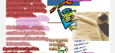

Information is data that communicates. Communication is sensory. In current computer technology, the sense of sight is emphasized. To communicate in this medium, we need to work visually.
HTML
HTML is the hypertext markup language. It is a declarative, rather
than imperative (= procedrual), language for specifying the spatial
layout of textual elements, images, and multimedia. The hyperlink is
a means for interconnection. Tables enable spatial structure. Form
elements enable user input.
Spatial Layout
We need to understand principles of spatial layout, in order to create
good design = design that communicates. The use of white space is
important, as a means of creating foreground/background
relationship. Differentials of density can
create focus. Underlying grid systems organize space.

Cascading Style Sheets
CSS enables precise control of layout in modern HTML.
Text attributes can be specified very precisely. So can layout,
including absoulute positioning. The specification of look and feel
(styles) can be separated from the rest of the specification of the content.
Best of all, all CSS attributes can be accessed dynamically (later
on), through the DOM!
Text
Serif and sans-serif fonts specify the outlines used for text. Weights
create emphasis. Design examples establish the role of text
specifications in visual communication.
Color
Some color combinations are soothing. Color harmonies are an art and a
science. We will investigate Itten's theoy of color, including
contrasts of warm/cold, extent, and saturation.